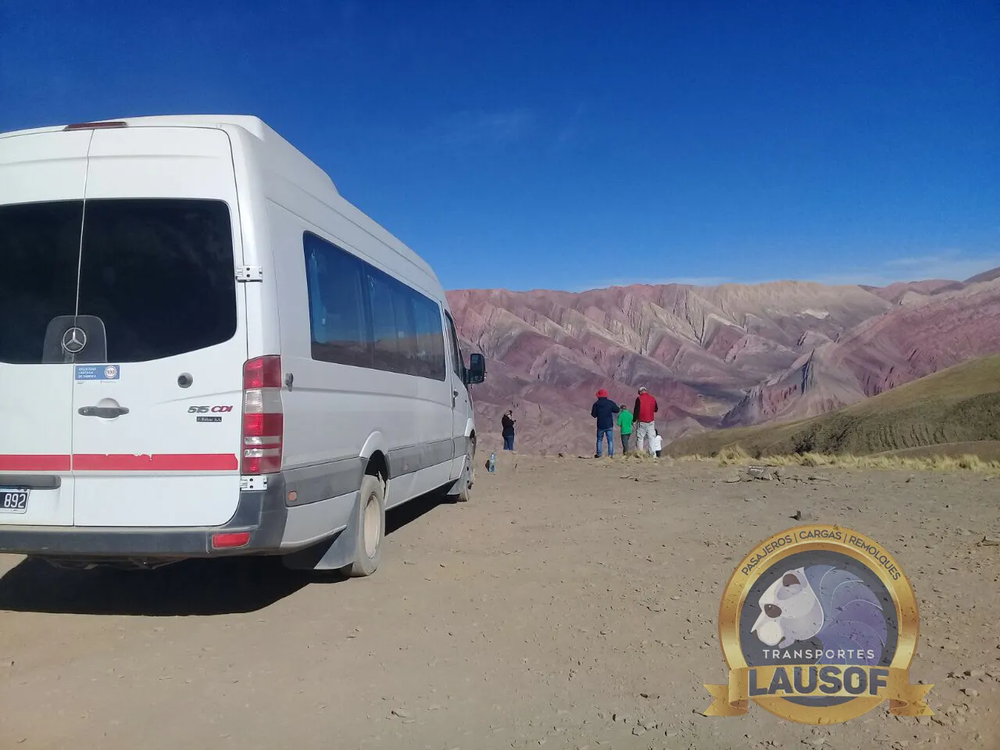
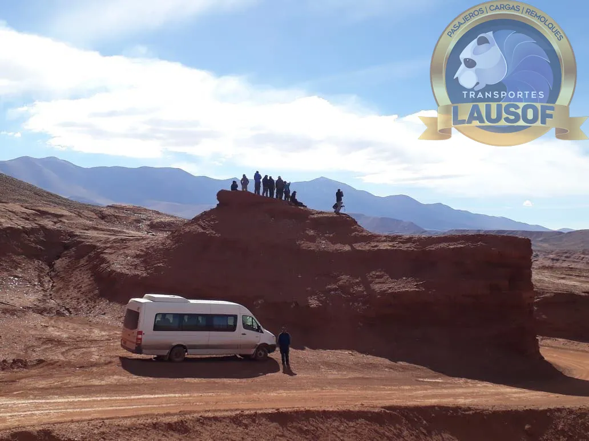
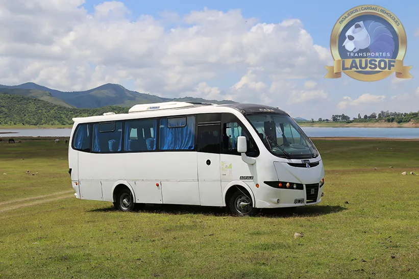

Recitales y festivales
Combis a recitales y festivales en Jujuy y Tucumán
Tu grupo sale de Salta en una combi de 19+1 plazas con chofer profesional, el chofer espera durante el show y vuelven todos juntos la misma noche. Nadie maneja de madrugada y nadie se queda a pie.
El servicio
Una combi para tu grupo, de ida y de vuelta
Cuando el show es en otra provincia, el problema no es la entrada: es cómo ir y, sobre todo, cómo volver. Llevamos grupos desde Salta a eventos en Jujuy y Tucumán — y también desde esas provincias a eventos en Salta.
Estadios, teatros y predios de San Salvador de Jujuy y San Miguel de Tucumán, con regreso al terminar el show.
Festivales de música, peñas y fiestas del NOA: el grupo llega junto y vuelve junto, sin depender de nadie más.
Juntan a la gente, reservan la combi completa y reparten el costo entre todos. Uno solo coordina con nosotros por WhatsApp.
Clubes, peñas e instituciones que viajan a un evento en otra provincia, con unidad habilitada y factura A.
Cómo funciona
Ida y vuelta la misma noche
El viaje se arma alrededor del evento: salida coordinada, chofer esperando y regreso al finalizar. Vos te ocupás de las entradas; del viaje nos ocupamos nosotros.
Acordamos punto y horario de salida según la hora del evento, con margen para llegar tranquilos.
La combi no se va: el chofer queda en el lugar y, cuando termina el show, el grupo sube y arranca la vuelta.
Sin hotel, sin manejar de madrugada por la ruta: viajás dormido y amanecés en tu casa.
Unidad habilitada por CNRT para viajes entre provincias, con GPS en las unidades en servicio y chofer profesional al volante.
Las unidades
Combis 19+1 mantenidas en taller propio
El transporte de pasajeros fue nuestro primer servicio: empezamos con él en 2010 y conocemos las rutas del NOA de memoria. Las unidades se revisan y se reparan con nuestro propio equipo mecánico.



Cómo reservar
Un mensaje de WhatsApp alcanza
Escribinos con tres datos: la fecha, el evento y cuántos viajan. Te respondemos con la cotización de la combi completa y, si te sirve, dejamos coordinado el punto y el horario de salida en el mismo chat.
Hablás siempre con la misma persona, de la cotización al regreso. Si reservás para un club o una institución, emitimos factura A — somos Lausof S.R.L., CUIT 30-71146774-9.
Preguntas frecuentes
Lo que nos preguntan antes de reservar
¿Cuánto cuesta el viaje?
Depende de la fecha, el destino y la espera. Escribinos por WhatsApp con el evento y la cantidad de pasajeros y te pasamos la cotización de la combi completa; el grupo después reparte el costo como quiera.
¿El chofer espera durante el show?
Sí. La combi queda en el lugar del evento y el regreso arranca cuando termina el show, con el mismo chofer y por el mismo punto de encuentro.
¿De cuántas plazas son las combis?
De 19+1: diecinueve pasajeros más el chofer. El servicio es siempre con chofer profesional, con psicofísico y ART al día.
¿A qué lugares viajan?
Hacemos viajes entre provincias del NOA con habilitación CNRT interjurisdiccional: de Salta a eventos en Jujuy y Tucumán, y también desde Jujuy o Tucumán a eventos en Salta.
¿Emiten factura A?
Sí. Somos Lausof S.R.L., CUIT 30-71146774-9, y emitimos factura A.
¿Tu grupo ya tiene las entradas?
Contanos la fecha, el evento y cuántos viajan. Te respondemos con la cotización en el día.